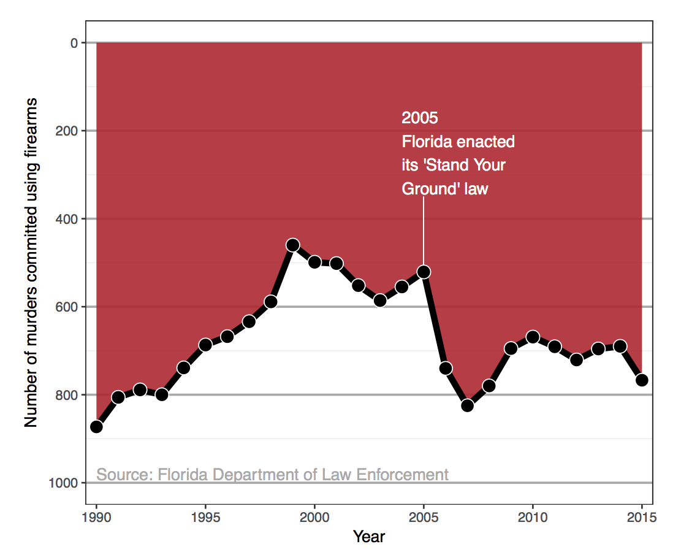
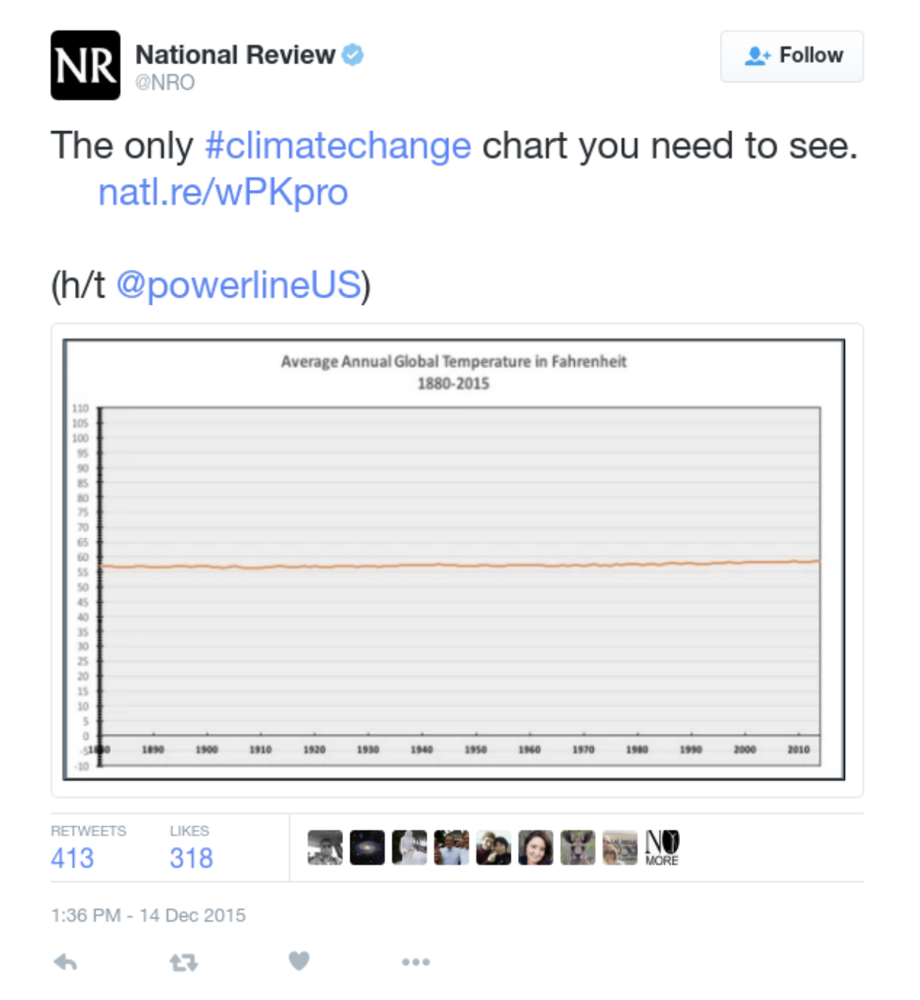

Arguably, data have the broadest impact in engaging readers, changing minds, and determining policy when they are presented graphically. It is the potential for enormous impact that requires a data scientist to think most carefully about how their visualizations are created and then subsequently consumed.
Many of us already teach data visualization in our statistics and data science classes. Therefore, introducing an ethical framework and a theory on valid graphics will be a natural fit into many classes.
Michael Correll writes about the “Ethical Dimensions of Visualization Research” and suggests that we:
have obligations in that we have a great deal of power over how people ultimately make use of data, both in the patterns they see and the conclusions they draw.
He further suggests that in every data visualization it is important to:
Make the Invisible Visible
Collect Data with Empathy
Challenge Structures of Power
Along the same lines, Nolan and Perrett describe three important ways that graphics can be used to convey information from data.
Make the data stand out
Facilitate comparisons
Add information
The Basic Tenets of Graphing
As a first foray into understanding how graphical information is utilized, it is important to discuss basic ideas of graph structure and visual perception. In order to present data well, one must understand how to read a chart and how others read a chart.
Since Huff’s well-known “How to Lie with Statistics” was published in 1954, statistics educators have long taught students about the importance of scale, including zero as a baseline, labeling axes, and eliminating superfluous chart junk.
Less well known, however, are more nuanced considerations of how a graph is interpreted. For example, Cleveland and McGill were able to rank different visual cues, summarized and expanded on by Yau.
Additionally, if the observer cannot see the graphic clearly, the information cannot be conveyed. Considering font size, labels, and colors are of utmost importance and part of the ethical considerations for all data scientists. For example, the R package RColorBrewer provides different color schemes for optimal visual perception.1 A discussion of using color in R (including color blindness) is provided on Jenny Bryan’s STAT545 course website https://stat545.com/colors.html.
RColorBrewer::display.brewer.all()
Compelling Examples
Because educating data scientists is about engagement as well as information, it is often of utmost importance to provide examples of why and how visualizations can go wrong. Unfortunately, it is not difficult to find graphics that misrepresent information.
The first example is astonishingly problematic, although for most people, it really takes a second glance to focus in on the y-axis.

A great example of a misleading image taken from Modern Data Science with R by Baumer, Kaplan, and Horton
Or another plot that has gotten a lot of press is the following. What is wrong with this plot? (Hint: again, look at the y-axis… apologies if the image is hard to see!)

A tweet by National Review on December 14, 2015 showing the change in global temperature over time. Taken from Modern Data Science with R by Baumer, Kaplan, and Horton
Recently, the Georgia Department of Health came out with a grouped barplot showing the number of COVID-19 cases by day in 5 populous counties in GA. The bars were arranged in some kind of decreasing order, but at first glance, the typical reader will think that the bars are sorted according to time increasing along the x-axis.
In his book How Charts Lie, Albert Cairo discusses the importance of graphs to communicate uncertainty. Consider the hurricane graph below that describes a “cone of uncertainty”. The increasing path is meant to indicate that the path becomes less certain, but the widening is commonly interpreted to indicate that the hurricane is getting larger or stronger. (The graphical issues are described in detail from an excellent NY Times interactive article “Those Hurricane Maps Don’t Mean What You Think They Mean”, https://www.nytimes.com/interactive/2019/08/29/opinion/hurricane-dorian-forecast-map.html.)
As mentioned above as a first step, students should understand the structure of graphics and they should be exposed to as many problematic examples as possible. Many of the examples are self-explanatory (especially after the issue has been pointed out), and the more dubious patterns which are presented, the easier it will be for students to identify problematic graphs and create non-problematic graphs.
But along with practice identifying graphics themselves, it is valuable for students to really understand why it is so important to create graphics that convey real information.
Edward Tufte, known for his work in visual communication of information, provides an example of a poor visualization having a catastrophic outcome. The example is based on the Challenger disaster from January 28, 1986 when the space shuttle took off from Cape Canaveral, FL and immediate exploded, killing all seven astronauts aboard. We now know that the reason for the explosion was due to the failure of two rubber O-rings which malfunctioned due to the cold temperature of the day (\(\sim 29^\circ\) F).
It is now understood that the risks due to the cold weather were known by many of the engineers, but they were not able to convince the powers that be to postpone the launch. The evidence was clear but it was poorly communicated. Indeed, there was no intent to mislead or fool the reader. Just the opposite, the engineers were trying to use their graphics to argue the truth; unfortunately, the graphics were not up to the task.
One of the engineers’ visualizations to demonstrate the frequency of o-ring failure as it relates to external temperature>
Tufte created the graphic below which should have been used before the launch to convince others to postpone. The basic scatterplot is extremely convincing.
The graphic the engineers should have led with in trying to persuade the administrators not to launch. It is evident that the number of O-ring failures is quite highly associated with the ambient temperature. Note the vital information on the x-axis associated with the large number of launches at warm temperatures that had zero O-ring failures.
Classroom Activities
Of course, a part of teaching any topic is structuring classroom activities. In 2019, we wrote a series of blog posts, and we point you to the post on Teaching Data Visualization which includes ideas for assignments as well as a large number of resources for books, articles, and courses that include classroom activities and assessment.
Modern Data Science with R devotes an entire chapter to Ethics (free online), including data visualization ethics, and includes homework problems to use.
But at the end of the day, we believe that the conversations you have with your students and the ideas generated from many examples will have the most powerful impact on helping students be good consumers and producers of data visualizations. Keep asking your students good questions:
What did you learn from the chart someone else made?
What did someone else learn from the chart you made?
Modern Data Science with R by Baumer, Kaplan, and Horton devotes a chapters to ethics, including the ethics associated with visualizations. (As a textbook, MDSR provides many great examples and end of chapter exercises.)
Alberto Cairo. 2019. “How Charts Lie.”
Cleveland and McGill. 1984. “Graphical Perception: Theory, Experimentation, and Application to the Development of Graphical Methods”.
Each day during the summer of 2019 we blogged on a given topic of interest to educators teaching data science and statistics courses. This summer we are focusing on data ethics. Each entry is intended to provide a short overview of why it is interesting and how it can be applied to teaching. We anticipate that these introductory pieces can be digested daily in 20 or 30 minute chunks that will leave you in a position to decide whether to explore more or integrate the material into your own classes. By following along for the summer, we hope that you will develop a clearer sense for the fast moving landscape of data science. Sign up for emails at https://groups.google.com/forum/#!forum/teach-data-science (you must be logged into Google to sign up).
We always welcome comments on entries and suggestions for new ones.
The original colorbrewer was designed by Cynthia Brewer as described at http://colorbrewer2.org.↩